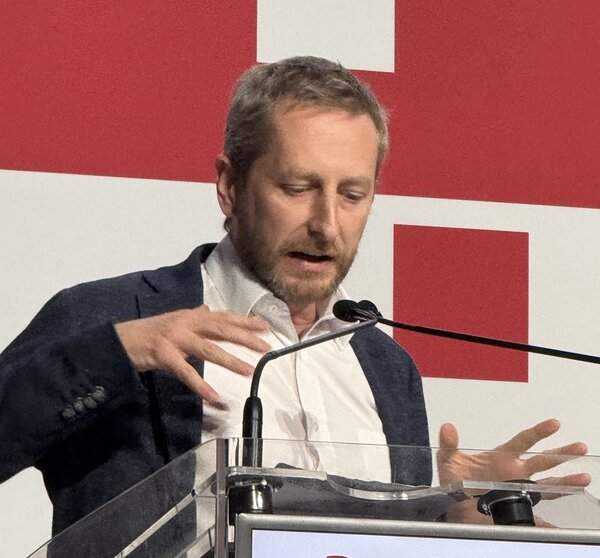

Paolo Crosetto

Senoir researcher @INRAE, Grenoble Applied Economics Laboratory.
Dad, European, Italian, Antifascista.
Experimental economics · Behavioural Public Policy · Labeling and Nutritional Policies · Bibliometrics and Scientific Publishing · Risk and Belief Elicitation · Choice and Context Effects · Innovation, Copyright and Crowdfunding · R & Linux user
Selected publications
Label vs Taxes in Nutritional policy JEBO 2025
The strain on scientific publishing QSS 2024
Click’n’Drag belief elicitation interface · JDM 2024
Choice process analysis of context effects · ManSci 2023
Effect of nutritional labels on shopping · ERAE 2019
Confusopolies: comparability & collusion in markets · JEMS 2017
A reconsideration of gender differences in risk attitudes · ManSci 2016
Recent preprints
Publishing in Support of Self in Special Issues Project page
The Drain of Scientific Publishing Project page
Resource-specific generosity Project page
Upcoming talks & events
Sep 2026 · Longevity beliefs · invited seminar · Charles University Prague · Slides & info
Sep 2026 · Scientific Publishing · course · Milan Istituto Tumori · Slides & info
Oct 2026 · Problems of scholarly communication · workshop · Lake Como Ethical Issues in Forensic Peer Review Workshop · Slides & info
Dec 2026 · External Validity of Risk Elicitation · invited seminar · Padova · Slides & info